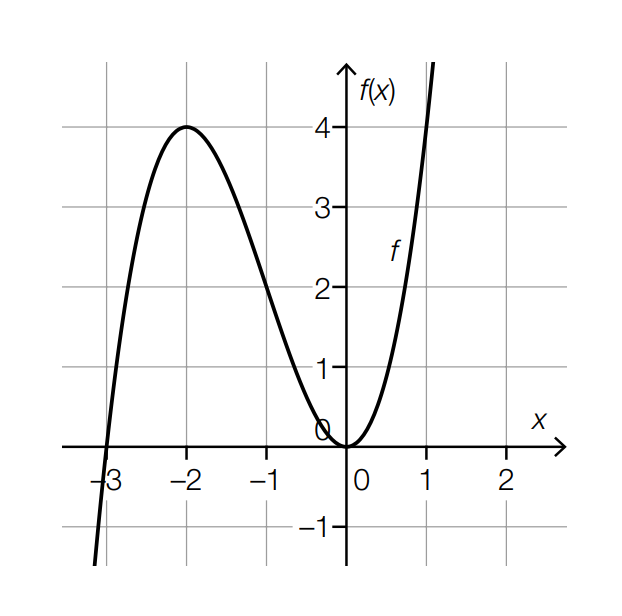

Monotonie- und Krümmungsverhalten einer Polynomfunktion
Nachstehend ist der Graph der Polynomfunktion 3. Grades \( f \) dargestellt.
Alle charakteristischen Punkte dieses Graphen (Schnittpunkte mit den Achsen, Extrempunkte, Wendepunkte) haben ganzzahlige Koordinaten.

Aufgabenstellung:
Ergänzen Sie die Textlücken im nachstehenden Satz durch Ankreuzen des jeweils zutreffenden Satzteils so, dass eine richtige Aussage entsteht.
Die Funktion \( f \) ist im Intervall
①
streng monoton steigend und ändert ihr Krümmungsverhalten an der Stelle
②.
[0/ ½ / 1 P.]